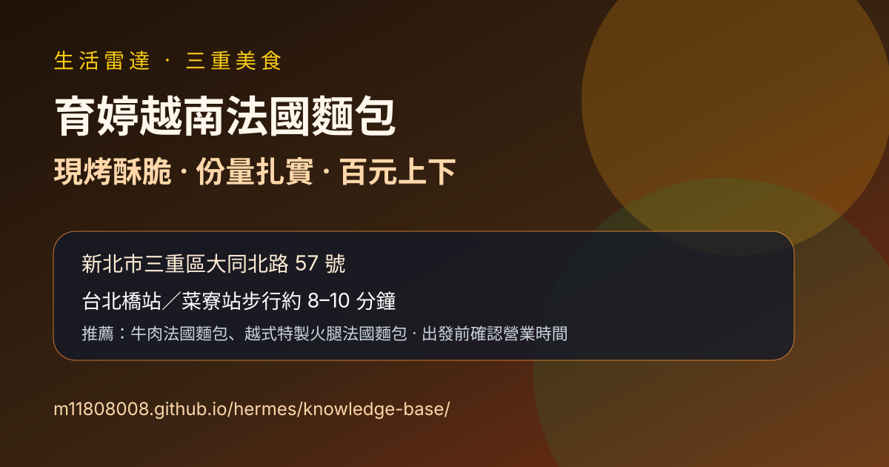

生活雷達｜三重育婷越南法國麵包：現烤酥脆、份量扎實的越式法國麵包

一句話摘要
阿朱的日常介紹三重大同北路「育婷越南法國麵包」：主打現烤手作法國麵包、越式夾心麵包、米線與點心，台北橋站／菜寮站步行約 10 分鐘。多篇食記與搜尋結果交叉顯示地址為新北市三重區大同北路 57 號、電話 0902-388-686，營業時間多標示 09:00–19:00 或 09:30–19:00、週一休；實際出發前仍建議再確認。
來源與驗證
- 原始來源：阿朱的日常《【三重美食】育婷越南法國麵包｜現烤酥脆爆餡的越式風味，排隊也甘願的銅板美食推薦》。
- 原文發布／更新時間：2026-06-23。
- 交叉參考：Mars 食記、Meiko 愛吃鬼、PEKO 部落格、Nash 等多篇食記搜尋結果皆指向同一地址與電話。
- 注意：餐飲店家菜單、價格與營業時間容易變動；本文以抓取當下公開資料整理，出發前仍建議查 Google Maps 或致電確認。
店家資訊
- 店名：育婷越南法國麵包
- 地址：新北市三重區大同北路 57 號
- 電話：0902-388-686
- 交通：捷運台北橋站或菜寮站步行約 8～10 分鐘。
- 營業時間：多篇資料標示 09:00–19:00 或 09:30–19:00，週一休息；以店家當日公告為準。
- 類型：越式法國麵包、越式米線、點心、原味麵包。
文章重點整理
阿朱的日常把育婷越南法國麵包定位為三重大同北路的人氣排隊小吃。店面不大，但紅色招牌與手作烘焙烤爐明顯，主打不定時新鮮出爐的法國麵包。餐點現點現做，人潮多時需要等待。
菜單以各式夾心法國麵包為主，也有越式米線與點心。原文提到招牌口味多落在百元上下，主餐約 60～110 元，甜點與原味麵包約 20 元起；若只想買麵包回家自行加料，也是不少人會選的方式。
推薦點法
### 牛肉法國麵包
原文形容份量沉、斷面塞得飽滿。麵包外皮酥脆但不刮口，內部保有彈性；內餡有醃白蘿蔔、小黃瓜、泡菜與牛肉，酸甜解膩。能吃辣的人可考慮加鮮辣椒，香氣更明顯。
### 越式特製火腿法國麵包
適合想吃傳統越式風味、或不想吃熱食的人。搭配越式火腿、醃白蘿蔔絲與香菜，重點是蔬菜爽脆與火腿鹹香；原文也提到外帶回家仍有不錯酥脆度。
實用建議
- 如果是專程去，建議避開尖峰排隊時間，或先接受現點現做需要等候。
- 可以順遊三重大同北路、台北橋站、菜寮站一帶小吃。
- 若對香菜、辣椒、豬肝醬或醃菜敏感，點餐時可先確認能否調整。
- 菜單價格會變，本文只保留「百元上下、原味麵包低價」的抓取時脈絡，不當作永久價格表。
適合收進生活雷達的理由
這篇是很實用的三重小吃口袋名單：交通不難、價格親民、份量夠，適合當正餐、下午茶或買麵包回家加料。對未來規劃三重美食路線，也可跟大同北路周邊小吃一起排。
原始連結
阿朱的日常：
Canonical：
交叉參考：
https://marsfood.tw/yuting-vietnamese-baguette/